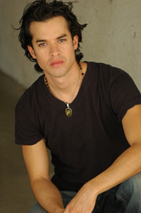

{% 
    assign $SLIDER=1
    assign $TITLE = "About"
    assign $PAGE_ID="home_form"
    include("_includes/header")
%}
<div class="pad1">
    <div class="wrapper pad_bot1">
        
        <h1>
            About Antonio Cullari</h1>
        <p>Antonio Cullari has been a resident of Los Angeles since 1998 and has always been
            involved in some sort of sport activity whether it be hiking, martial arts, yoga,
            weight training or simply running. Exercise has been a part of his daily life since
            childhood.</p>
        <p>In recent years he began practicing yoga and with it came a new understanding of
            the human body and how important it is to have healthy muscles and treat our body
            well.</p>
        <p>He then began attending meditation classes and found that all the exercises he was
            already doing incorporated and required proper breathing and concentration in order
            to achieve the full benefits.</p>
        <p>He then decided to learn more about the body and found that massage therapy is an
            excellent way to help the body regain its natural state of relaxation. For all the
            muscles in the body to "be happy" and not "knotted up".</p>
        
        <p>
            Antonio attended the National Holistic Institute (NHI) in Encino, CA and graduated
            with honors as a massage therapist and health educator. The program was 720 hours
            and included many hours of anatomy, physiology, kinesiology as well as the eastern
            and western modalities.</p>
        <p class="pad_bot1">
            Antonio has combined both western and eastern modalities and philosophies in his
            approach to massage. Custom tailoring each massage to meet each clients specific
            wants and needs. Whether is be a Swedish massage or addressing specific issues using
            acupressure, deep tissue, Shiatsu or trigger points each massage will still be relaxing.
        </p>
    </div>
</div>
{% include("_includes/footer") %}